from blender_tissue_cartography import io as tcio
from blender_tissue_cartography import mesh as tcmesh
from blender_tissue_cartography import interpolation as tcinterp
from blender_tissue_cartography import registration as tcreg
from blender_tissue_cartography import smoothing as tcsmooth
from blender_tissue_cartography import wrapping as tcwrap
from blender_tissue_cartography import rotation as tcrot
from blender_tissue_cartography import harmonic as tcharmonic
from blender_tissue_cartography import remesh as tcremesh
import numpy as np
import igl
from scipy import stats
import matplotlib.pyplot as plt
import matplotlib as mpl
from skimage import transform
import warnings
import os
from copy import deepcopy
from tqdm.notebook import tqdm9. Time-lapse imaging and dynamic surfaces
In previous tutorials, we saw how to do tissue cartography with a single volumetric image. But often, we have multiple images of very similarly shaped objects - either the successive frames of a movie or multiple recordings of biological structures with very consistent shapes, like the Drosophila egg.
For each recording/frame, we have a mesh representing our surface of interest. We want to use “the same” UV map/cartographic projection for all of the meshes - both so that we don’t need to redo the work of creating the UV map, and to facilitate comparison across recordings/frames
There are two possible strategies for getting “the same” UV map:
- Compute the cartographic projection for each mesh individually, but using a consistent algorithmic procedure.
This approach works well for simple shapes, for example mildly deformed planes (use an axial projection, “UV -> Project from view” in Blender’s UV editor), or surfaces resembling spheres or cylinders ( “UV -> Unwrap -> Sphere/Cylinder Project”). Simply load all meshes of interest into Blender, and apply the projection (see Tutorial 3).
However, we will not pursue this approach further here: for more complex shapes a simple axial or clyinder projection will no longer work. There are more sophisticated algorithms (see e.g. Mitchell & Cislo, 2023) - but using them can require a lot of expertise. Also using a fixed algorithm means that you cannot define your UV maps in a graphical and interactive way.
- Define a UV map for a reference or keyframe mesh - for example, the first frame of a movie. Next wrap/deform your keyframe mesh to match the shape of all other meshes (e.g. from other frames) as well as possible. The deformed reference mesh now fits the volumetric data but still carries the UV map, and can now be used to create a cartographic projection.
This allows you to graphically design the UV map for the reference mesh in whatever way you want. Here is a simple illustration, with reference mesh in green and target mesh from the data in orange:
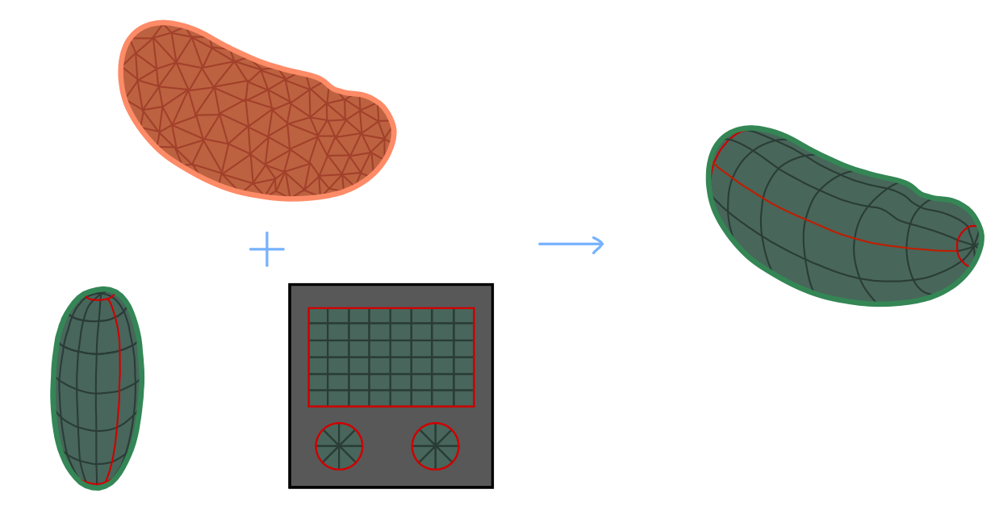
Below, we explain the nuts and bolts of approach 2, also called texture tranfer or surface to surface registration in some detail, and showcase the tools provided by the blender_tissue_cartography python library, using the registration, wrapping and harmonic modules. Most of these tools are also available in the blender add-on (see tutorial 3).
Meshing and segmentation for a movie
As a starting point for any of the approaches above, you will need a mesh of your surface at each movie time point. The process of segmenting your data for mesh creation is often the most time-consuming part of the tissue cartography pipeline, and for movies, it can often be accelerated by reusing information from the previous frame: 1. Train a single ilastik model to work for all (or at least multiple time points). You can use ilastik’s “batch predict” tab for this. In this case, it is important to standardize the ilastik input data (i.e. ensure consistent brightness and contrast). See io.normalize_quantiles_zstack 2. If you use the morphsnakes module to convert your ilastik probabilities into a segmentation, you can use the previous timepoint’s segmentation as a seed point for the next one, which greatly improves results.
A note on remeshing
With meshes, we represent a surface as a collection of points (vertices) and faces connecting them. The combinatorial configuration of faces and vertices is called the mesh topology (not to be confused with the topology of the surface, e.g. sphere, torus, etc.). The same surface can be represented by different meshes, for example, triangular vs quad meshes. Remeshing is the process of modifying a mesh so that it has a “nicer” topology without changing the shape of the surface - e.g. to ensure faces are of uniform size and not extremely deformed, or to get the right “resolution” (number of vertices) to represent the surface shape.
For single recordings, the mesh topology does not matter too much. But once we start deforming our meshes, it becomes very important. 1. Most remeshing will destroy UV mapping information. Therefore, try to do all your remeshing before you create UV maps. 2. Especially for your keyframe meshes, ensure you have a “good” topology (uniform triangle size, no deformed triangles). For this, you can use pymeshlab (remesh_pymeshlab.remesh_pymeshlab) or blender (Modifiers -> Remesh modifier). 3. Some remesh algorithm can preserve your UV maps. You can use them to improve the topology of your deformed keyframes, as explained below.
1. Dynamic data, fixed surface
In the simplest case, even though there are some interesting dynamics in the fluorescence microscopy data, our surface of interest does not change over time. For example, there are many instances during development where cells are moving across an essentially fixed surface, for example during Zebrafish epiboly or germband extension in Drosophila. In this case, we are in luck: we can simply re-use the same mesh and UV map we created for the first timepoint to make cartographic projections for the subsequent frames. You can do this via a Python script (see below), or using the add-on’s “Batch process” button
2. Surface undergoing rigid motion
A slightly more general case can also be handled easily: the surface of interest does not deform, and only moves, rotates, or changes in scale. In this case, we just need to translate/rotate/scale our original mesh and we are done. The tools for this are provided in the registration module, as well as in the add-on’s “Align Meshes” button.
3. Surface undergoing non-rigid deformation
If the surface of interest is dynamically changing its shape, the problem becomes, in general, considerably more difficult. Indeed, it is in general not a well-defined mathematical question what a “consistent” cartographic projection for potentially very different-looking surfaces would be.
Small non-rigid deformation
If the deformations are not too drastic, we can use an extremely simple method: 1. Align the keyframe mesh to the mesh of the target timepoint using rigid transformations as best as possible. 2. Project each vertex on the keyframe mesh onto the closest point on the target timepoint mesh. We will call this “shrink-wrapping”, and it is implemented in the wrapping module. 3. Smooth the shrink-wrapped mesh to smooth out creases created by shrink-wrapping.
Here is an illustration: 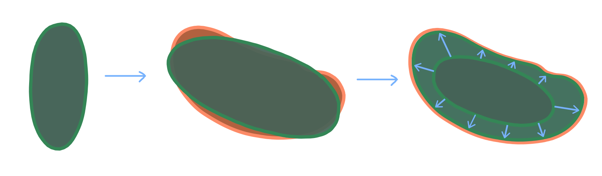
This process can be done iteratively: first shrinkwrap the keyframe mesh to the mesh of the subsequent frame, then use that result and shrinkwrap it to the next-to-subsequent frame, etc. It is generally a good idea to use your most “complicated” shape as a keyframe. In developmental biology, where shapes generally start simple and become more complicated over time, this means using the last timepoint as keyframe and propagating it backward in time.
As you iterative the shrink-wrapping, you may run into trouble if your keyframe becomes too deformed. We provide some tools for fixing this via remeshing (remesh and remesh_pymeshlab modules), but you may have to define multiple keyframes.
Iterative shrink-wrapping is also supported in the blender add-on (“Shrinkwrap Meshes” button).
Large non-rigid deformation
If there is a lot of deformation between your time points, shrink-wrapping will not work. We need a more powerful algorithm for computing a map from our keyframe mesh to the target mesh. There is a large literature on this question from the computer graphics literature, and we will provide some pointers below. Here, we implement a simple-to-use algorithm that does not require landmarks or any other user input. It is based on mapping each mesh to a reference shape - a disk, punctured disk, or a sphere, depending on whether the surface topology is that of a disk, cylinder, or sphere.
In the reference shape, one only has to optimize over (2d and 3d, respectively) rotations to match the two shapes. This approach, called Moebius registration, can handle very large deformations. Here is an illustration:
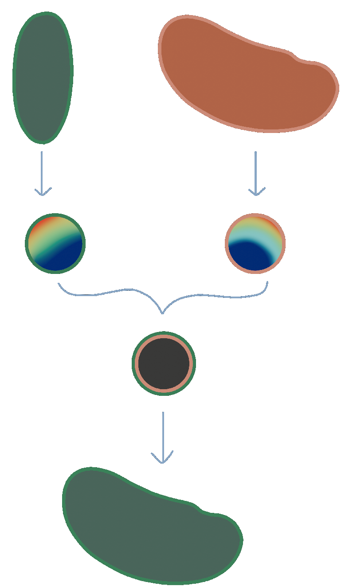
The rainbow texture represents the signal used to align the reference shapes by rotation - namely the area distortion of the map from each mesh to the reference shape.
Some pointers to the literature and other useful software
- A lecture about surface-surface mapping
- Another approach for mesh-to-mesh mapping is provided by so-called “functional maps”, implemented in Python by pyFM.
- Keenan Crane has a great overview of surface parametrization
import pymeshlab
from blender_tissue_cartography import interface_pymeshlab as intmsl
from blender_tissue_cartography import remesh_pymeshlab as tcremesh_pymeshlabWarning:
Unable to load the following plugins:
libio_e57.so: libio_e57.so does not seem to be a Qt Plugin.
Cannot load library /home/nikolas/Programs/miniconda3/envs/blender-tissue-cartography/lib/python3.11/site-packages/pymeshlab/lib/plugins/libio_e57.so: (/lib/x86_64-linux-gnu/libp11-kit.so.0: undefined symbol: ffi_type_pointer, version LIBFFI_BASE_7.0)
from importlib import reloadreload(tcwrap)<module 'blender_tissue_cartography.wrapping' from '/home/nikolas/Documents/UCSB/streichan/numerics/code/python code/jupyter notebooks/blender-tissue-cartography/blender_tissue_cartography/wrapping.py'>tcremesh_pymeshlab.remesh_pymeshlab<function blender_tissue_cartography.remesh_pymeshlab.remesh_pymeshlab(mesh, targetlen=1, iterations=10)>np.set_printoptions(suppress=True)Load meshes
This dataset shows the developing Drosophila midgut, courtesy of N. Mitchell. See Mitchell et al 2022. The gut undergoes dramatic shape changes (constriction and coiling) as it develops. It is therefore a very challenging test case for a movie pipeline.
We will use meshes of the gut surface already computed by Mitchell et al using a combination of Ilastik + Morphological Snakes + MeshLab, as we show in tutorial 6:
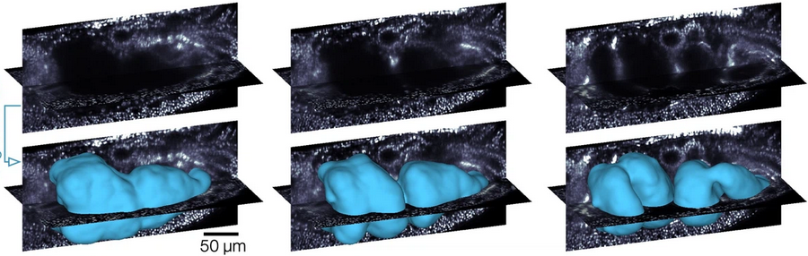
We have a mesh for every timepoint. Let’s read them in.
metadata_dict = {'resolution_in_microns': (0.786, 0.786, 0.786)}meshes_dict = {i: tcmesh.read_other_formats_without_uv(f"midgut_example/meshes/mesh_{str(i).zfill(2)}.obj")
for i in tqdm(range(1, 21))}
# the function "tcmesh.read_other_formats_without_uv" can be used to read meshes of various file formats
# (if they don't contain UV info)We also have UV maps for the first and last timepoint in our time series.
mesh_initial_UV = tcmesh.ObjMesh.read_obj("midgut_example/initial_uv.obj") # time point 1
mesh_final_UV = tcmesh.ObjMesh.read_obj("midgut_example/final_uv.obj") # time point 20Aside - fixing UV maps
Especially for more complicated shapes, methods like the cylindrical or spherical projection can give you UV maps with flipped triangles, i.e. the map from the mesh to the plane has self-intersections. This is not ideal for cartographic interpolation (although it will not cause cartographic interpolation to fail, just gives you a warning).
We can often fix this issue by smoothing out vertices in UV space while keeping the boundaries of the UV “islands” fixed. Let’s take a look.
# the mesh has some flipped triangles
igl.flipped_triangles(mesh_final_UV.texture_vertices, mesh_final_UV.texture_tris)array([ 210, 245, 246, 261, 330, 11394, 11395, 11396, 11397,
11398, 11399, 11400, 11570, 11571, 11572, 11573, 11574, 11575,
11576, 11577, 11578, 11579, 11580, 11581, 11586, 11684, 11725,
11726, 11730, 11731, 11732, 11733, 11734, 11736, 11737, 11738,
11832, 11833, 11834, 11835, 11836, 11837, 11838, 11852, 11853,
11855, 11856, 11857, 11858, 11859, 11860, 11865, 11866, 11867,
11868, 11956, 11959, 11963, 11964, 11967, 11973, 11974, 11975,
11976, 11977, 12093, 12094, 12098, 12102, 12105, 12106, 12108,
12109, 12110, 12111, 12112, 12113, 12114, 12115, 12120, 12121,
12129, 12130, 12131, 12132, 12133, 12134, 12135, 12136, 12137,
12138, 12139, 12140, 12141, 12142, 12143, 12144, 12145, 12149,
12150, 12151, 12152, 12153, 12154, 12160, 12175, 12183, 12199,
12241, 12242, 12243, 12244, 12245, 12246, 12247, 12355, 12356,
12360, 12361, 12362, 12363, 12366, 12367, 12371, 12372, 12373,
12374, 12376, 12377, 12393, 12394, 12395, 12396, 12397, 12398,
12399, 12400, 12401, 12402, 20553, 20561, 20562, 20611, 20632,
20721, 39948, 39952, 39954, 39960, 39961, 39962, 39964, 39965,
39966, 39967, 39984, 39988, 39989, 39990, 39991, 39993, 39995,
39996, 39997, 39998, 39999, 40001, 40002, 40003, 40004, 40005,
40006, 40007, 40008, 40009, 40010, 40011, 40012, 40013, 40014,
40015, 40016, 40017, 40018, 40019, 40020, 40021, 40022, 40023,
40024, 40025, 40026, 40027, 40028, 40046, 40047, 40048, 40051,
40052, 40053, 40054, 40074, 40097, 40098, 40099, 40100, 40101,
40110, 40111, 40112, 40113, 40114, 40115, 40116, 40117, 40118,
40119, 40120, 40121, 40122, 40123, 40124, 40125, 40126, 40127,
40128, 40129, 40130, 40131, 40132, 40133, 40134, 40135, 40136,
40137, 40138, 40139, 40140, 40141, 40142, 40143, 40144, 40145,
40146, 40150, 40151, 40152, 40153, 40154, 40156, 40158, 40160,
40161, 40162, 40163, 40164, 40165, 40166, 40167, 40168, 40169,
40170, 40171, 40172, 40173, 40174, 40175, 40176, 40177, 40178,
40179, 40197, 40198, 40208, 40209, 40210, 40213, 40214, 40215,
40216, 40217, 40218, 40219, 40220, 40221, 40222, 40223, 40224,
40225, 40226, 40227, 40228, 40229, 40230, 40231, 40232, 40233,
40234, 40235, 40239, 40242, 40243, 40274, 40275, 40276, 40277,
40278, 40279, 40280, 40281, 40282, 40283, 40284, 40285, 40286,
40287, 40288, 40289, 40290, 40291, 40292, 40293, 40294, 40295,
40296, 40297, 40298, 40299, 40300, 40301, 40302, 40303, 40304,
40305, 40306, 40307, 40308, 40309, 40310, 40311, 40312, 40313,
40314, 40315, 40316, 40317, 40318, 40319, 40320, 40321, 40322,
40323, 40324, 40325, 40326, 40327, 40328, 40329, 40330, 40331,
40332, 40333, 40334, 40335, 40336, 40337, 40338, 40339, 40351,
40352, 40353, 40354, 40355, 40356, 40357, 40358, 40359, 40360,
40367, 40368, 40461, 40462, 40463, 40464, 40465, 40466, 40467,
40468, 40483, 40484, 40485, 40486, 40487, 40488, 40489, 40490,
40491, 40492, 40493, 40494, 40495, 40496, 40497, 40498, 40499,
40500, 40501, 40502, 40503, 40504, 40505, 40506, 40507, 40508,
40509, 40510, 40511, 40512, 40513, 40514, 40515, 40516, 40517,
40518, 40519, 40520, 40521, 40522, 40523, 40524, 40525, 40526,
40527, 40528, 40529, 40530, 40531, 40532, 40533, 40534, 40535,
40536, 40537, 40538, 40539, 40540, 40541, 40542, 40543, 40544,
40545, 40548, 40549, 40552, 40554, 40555, 40556, 40557, 40558,
40561, 40562, 40567, 40569, 40570, 40571, 40572, 40574, 40601,
40602, 40603, 40604, 40606, 40608, 40653, 40654, 40655, 40656,
40657, 40658, 40659, 40660, 40661, 40662, 40663, 40664, 40665,
40666, 40669, 40670, 40679, 40680, 40681, 40682, 42996, 42997,
43008, 43009, 44014, 44015, 44018, 44019, 44023, 44024, 44026,
44028, 44029])mesh_final_UV = tcsmooth.smooth_laplacian_texture(mesh_final_UV, lamb=0.5, n_iter=2500, boundary="fixed")# and now they are mostly fixed
igl.flipped_triangles(mesh_final_UV.texture_vertices, mesh_final_UV.texture_tris)array(261)# the shape of the UV islands did not change.
plt.scatter(*mesh_final_UV.texture_vertices.T, s=0.1)
plt.axis("equal")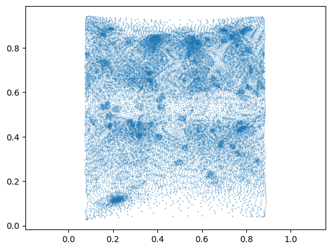
Load image data
The image data shows fluorescently marked nuclei. The large “hole” in the center of the embryo is the developing midgut.
image = tcio.adjust_axis_order(tcio.imread("midgut_example/downsampled_3x/Time_000001_c1_stab-3x.tif"))
print("image shape:", image.shape)image shape: (1, 247, 413, 200)slice_image, slice_vertices = tcinterp.get_cross_section_vertices_normals(0, 150, image,
mesh_initial_UV, metadata_dict["resolution_in_microns"], width=2, get_normals=False)plt.scatter(*slice_vertices.T, s=5, c="tab:red")
plt.imshow(slice_image[0], vmax=10000, origin="lower")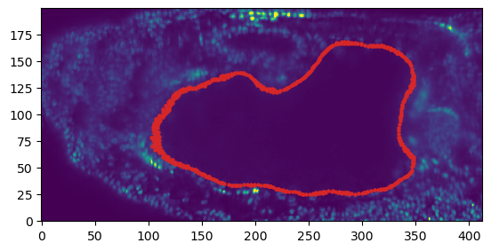
Mesh registration
Let’s first see how we can register two meshes using rigid body transformations.
mesh_source = deepcopy(meshes_dict[1]) # the "source" mesh is the one we want to tranform to match the target
mesh_target = deepcopy(meshes_dict[1]) # for the target mesh, we take a copy that we will rotate+scale+translate
random_rotation = stats.special_ortho_group.rvs(3)
mesh_target.vertices = 1.1 * mesh_target.vertices @ random_rotation + np.array([100, 0, 0])# registration proceeds in two steps: first, a coarse step gets an initial guess for the transformation
trafo_initial, _ = tcreg.align_by_centroid_and_intertia(mesh_source.vertices, mesh_target.vertices,
scale=True)
# and then the transformation is improved by the ICP algorithm (en.wikipedia.org/wiki/Iterative_closest_point)
trafo_icp, _, _ = tcreg.icp(mesh_source.vertices, mesh_target.vertices, initial=trafo_initial,
threshold=1e-4, max_iterations=200, include_scaling=True, n_samples=10000)# a transformation is represented by a 4*4 matrix (en.wikipedia.org/wiki/Affine_transformation#Augmented_matrix)
trafo_icparray([[ -0.33481982, 0.5663229 , 0.88130666, 100.12547619],
[ -0.92947084, 0.26932741, -0.52252474, 0.03525151],
[ -0.48907168, -0.90324193, 0.39543405, 0.21661484],
[ 0. , 0. , 0. , 1. ]])# let's apply the transformation and check we get the target mesh
mesh_registered = mesh_source.apply_affine_to_mesh(trafo_icp)
# indeed, the distance between the vertices is very small.
np.linalg.norm(mesh_registered.vertices-mesh_target.vertices, axis=-1).mean()0.12687255365401112Shrink-wrapping pipeline
Now let’s try to serially shrink-wrap our initial mesh onto the subsequent timepoints, as described above. We use the function tcwrap.shrinkwrap_igl for this. It is useful to slightly smooth both the keyframe and the target of the shrinkwrap a little before shrinkwrapping, which you can control using the arguments n_iter_smooth_target, n_iter_smooth_wrapped.
You can also try out shrinkwrapping in blender, using the shrinkwrap modifier as explained in tutorial 7.
After wrapping, we use on surface smoothing to remove creases potentially created by the shrink-wrapping.
You may need to experiment with the parameters a little.
# we initialize the list of shrink-wrapped meshes with our keyframe
meshes_wrapped = {1: mesh_initial_UV}for i in tqdm(range(2, 21)):
# we use the most recent deformed keyframe as input in the shrink-wrapping algorithm
mesh_source = meshes_wrapped[i-1]
mesh_target = meshes_dict[i]
# register using ICP
trafo_initial, _ = tcreg.align_by_centroid_and_intertia(mesh_source.vertices, mesh_target.vertices,
scale=True, choose_minimal_rotation=True)
trafo_icp, _, _ = tcreg.icp(mesh_source.vertices, mesh_target.vertices, initial=trafo_initial,
max_iterations=100, n_samples=5000)
mesh_registered = mesh_source.apply_affine_to_mesh(trafo_icp)
# shrink-wrap
mesh_wrapped = tcwrap.shrinkwrap_igl(mesh_registered, mesh_target,
n_iter_smooth_target=1, n_iter_smooth_wrapped=0)
# smooth out deformation on-surface - important!
mesh_wrapped = tcsmooth.smooth_laplacian_on_surface(mesh_wrapped, n_iter=5, lamb=0.5, n_iter_laplace=10)
# append to list
mesh_wrapped.write_obj(f"midgut_example/meshes_wrapped/mesh_{str(i).zfill(2)}_wrapped.obj")
meshes_wrapped[i] = mesh_wrapped/home/nikolas/Documents/UCSB/streichan/numerics/code/python code/jupyter notebooks/blender-tissue-cartography/blender_tissue_cartography/wrapping.py:206: RuntimeWarning: Warning: 2 normal(s) flipped during shrink-wrapping
warnings.warn(f"Warning: {np.sum(dots<0)} normal(s) flipped during shrink-wrapping", RuntimeWarning)
/home/nikolas/Documents/UCSB/streichan/numerics/code/python code/jupyter notebooks/blender-tissue-cartography/blender_tissue_cartography/wrapping.py:206: RuntimeWarning: Warning: 5 normal(s) flipped during shrink-wrapping
warnings.warn(f"Warning: {np.sum(dots<0)} normal(s) flipped during shrink-wrapping", RuntimeWarning)# the wrapped meshes contain the same UV map information as the original mesh
np.allclose(meshes_wrapped[20].texture_vertices, mesh_initial_UV.texture_vertices)TrueInspect in blender
Let’s inspect the results in blender (midgut_example/wrapping.blend).
For the first, say 10 time points, this approach looks decent. After that, we encounter a problem: the surface if the gut deforms very strongly (by forming constrictions). If we do not use on-surface smoothing, we get poor results:
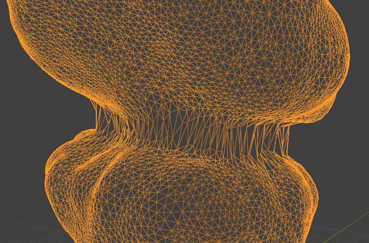
On-surface smoothing improves this a lot:
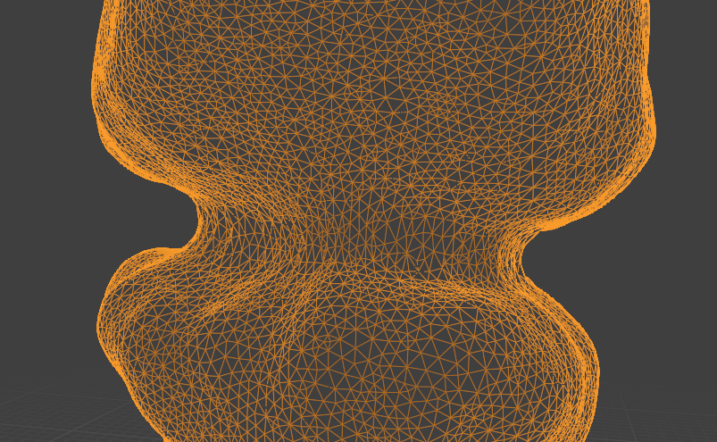
Operate in reverse time
However, the shrink-wrapped mesh fails to capture some sharp details of the target meshes (close to the constrictions, for example).
As described above, it is generally best to use your most complicated shape as a keyframe (here, the last timepoint), and deform it towards the simpler shapes. Hence, let us define a UV map for timepoint 20 and shrink-wrap reverse in time.
t_final = 20
meshes_wrapped_reverse = {20: mesh_final_UV}for i in tqdm(reversed(range(1, t_final))):
print(i)
mesh_source = meshes_wrapped_reverse[i+1]
mesh_target = meshes_dict[i]
# register using ICP
trafo_initial, _ = tcreg.align_by_centroid_and_intertia(mesh_source.vertices, mesh_target.vertices,
shear=True, choose_minimal_rotation=True)
trafo_icp, _, _ = tcreg.icp(mesh_source.vertices, mesh_target.vertices, initial=trafo_initial,
max_iterations=100, include_scaling=True, n_samples=5000)
mesh_registered = mesh_source.apply_affine_to_mesh(trafo_icp)
# shrink-wrap
mesh_wrapped = tcwrap.shrinkwrap_igl(mesh_registered, mesh_target,
n_iter_smooth_target=1, n_iter_smooth_wrapped=1)
# smooth out deformation on-surface
mesh_wrapped = tcsmooth.smooth_laplacian_on_surface(mesh_wrapped, n_iter=5, lamb=0.5, n_iter_laplace=10)
# append to list
mesh_wrapped.write_obj(f"midgut_example/meshes_wrapped_reverse/mesh_{str(i).zfill(2)}_wrapped_reverse.obj")
meshes_wrapped_reverse[i] = mesh_wrapped19/home/nikolas/Documents/UCSB/streichan/numerics/code/python code/jupyter notebooks/blender-tissue-cartography/blender_tissue_cartography/wrapping.py:206: RuntimeWarning: Warning: 3 normal(s) flipped during shrink-wrapping
warnings.warn(f"Warning: {np.sum(dots<0)} normal(s) flipped during shrink-wrapping", RuntimeWarning)18
17
16
15
14
13
12
11
10/home/nikolas/Documents/UCSB/streichan/numerics/code/python code/jupyter notebooks/blender-tissue-cartography/blender_tissue_cartography/wrapping.py:206: RuntimeWarning: Warning: 1 normal(s) flipped during shrink-wrapping
warnings.warn(f"Warning: {np.sum(dots<0)} normal(s) flipped during shrink-wrapping", RuntimeWarning)9
8
7
6
5
4
3
2
1Inspect in blender
The results look decent enough.
Let’s visualize the UV maps on the wrapped meshes by adding an image texture in the shading workspace. We can use a color grid to visualize the correspondence between the meshes:
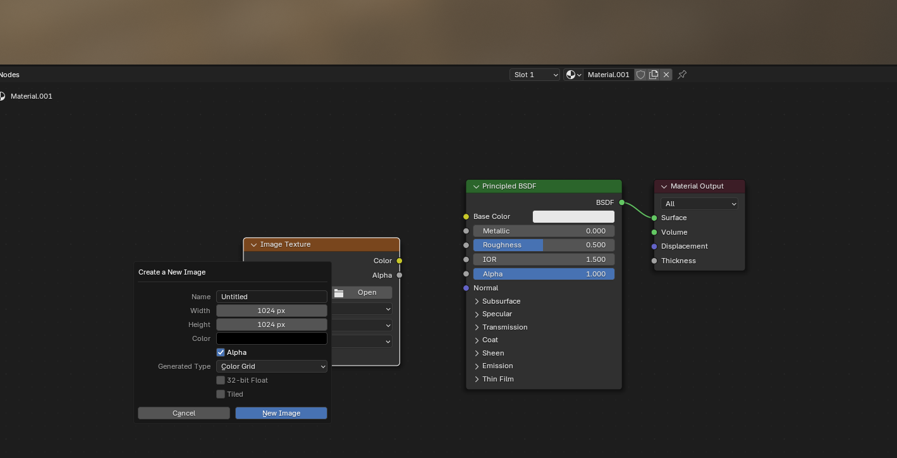
Let’s show the keyframe mesh final_uv, and the shrink-wrapped one side by side:
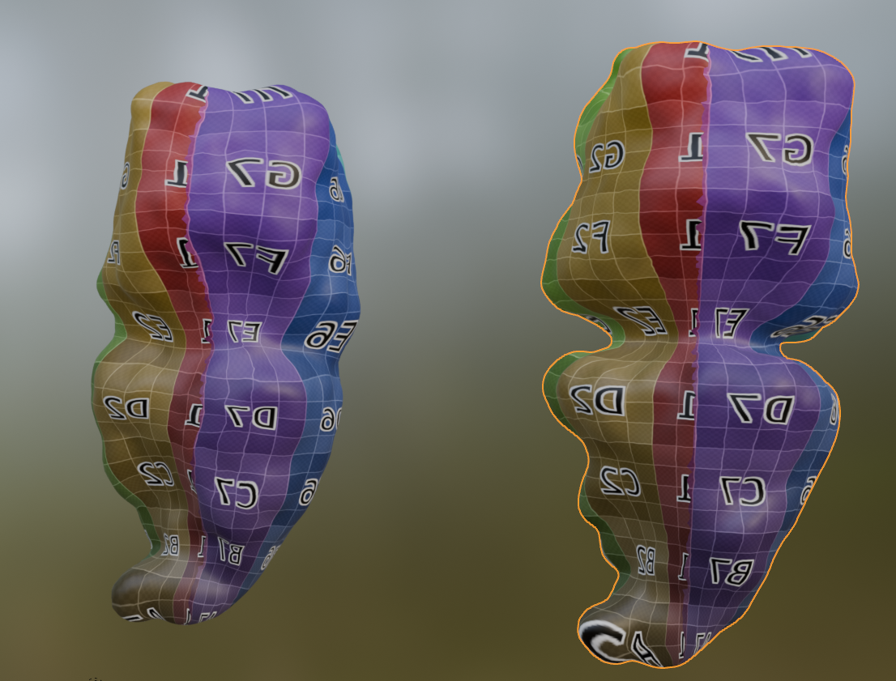
Looks good (except for the fact that I flipped the mesh orientations …)
Remeshing
As noted above, most remeshing algorithms destroy UV information. However, there are two exceptions: 1. Subdivision - this type of algorithm refines meshes by adding new vertices and faces to a mesh according to a pre-determined rule (for example, place a new vertex at each triangle midpoint). Since there is a well-defined map between the topology before and after subdivision, the UV info is preserved. Note: subdivision will greatly increase the size of your mesh, and it may become too large computationally. A variant is adaptive subdivision (subdividing certain parts of the mesh only, e.g. deformed triangles). 2. Edge flips - this changes the configuration of faces whithout moving vertices. Only implemented for triangle meshes.
These algorithms may become very useful to improve the mesh quality of your keyframed mesh as you deform it, and are implemented in the remesh module. Adaptive subdivision requires pymeshlab, see remesh_pymeshlab module.
# let's test this
mesh_test = deepcopy(mesh_final_UV)mesh_subdiv = tcremesh.subdivide_igl(mesh_test, reglue=True)# as you can see, the mesh resolution is greatly increased
fig, (ax1, ax2) = plt.subplots(figsize=(10, 5), ncols=2)
ax1.triplot(*mesh_test.texture_vertices.T, mesh_test.texture_tris, lw=0.2)
ax2.triplot(*mesh_subdiv.texture_vertices.T, mesh_subdiv.texture_tris, lw=0.2)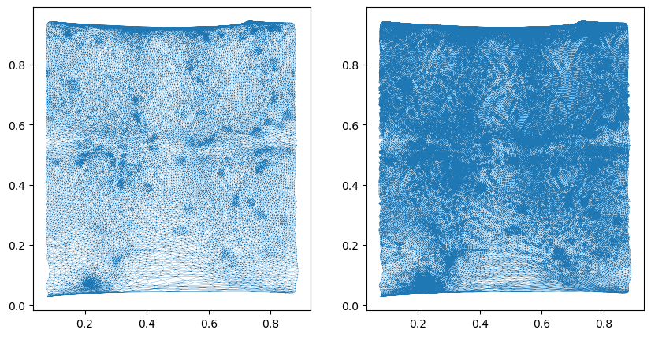
# the second algorithm involves changing the faces of the mesh by "edge flips" without moving vertices
# with the goal to make the mesh triangles more regularly sized (so-called Delaunay triangulation)
mesh_flipped = tcremesh.make_delaunay(mesh_test)<blender_tissue_cartography.io.ObjMesh>Large deformations
For very large deformations, shrink-wrapping does not work. As noted above, we provide an implementation of Moebius registration, which first maps the two meshes of interest to the sphere, and then aligns them via 3d rotations. This algorithm is more time-consuming but can handle large deformations. It is implemented in the harmonic module as harmonic.wrap_coords_via_sphere.
For meshes with disk or cylinder topology, similar algorithms are provided, harmonic.wrap_coords_via_disk and harmonic.wrap_coords_via_disk_cylinder.
For the individual components of the algorithms, namely (a) the map to sphere/disk and (b) rotational alignment, see the documentation in notebook 03d. Note that you can also use your own methods to map surfaces to the sphere or disk, or use an external tool like boundary-first-flattening.
A general-purpose code for shrink-wrapping via a shared parametrization is also provided.
# let's try to shrink-wrap the final onto the initial mesh
#mesh_source = deepcopy(mesh_final_UV)
#mesh_target = deepcopy(meshes_dict[1])
mesh_source = deepcopy(mesh_initial_UV)
mesh_target = deepcopy(meshes_dict[20])# compute the new coordinates for the keyframe mesh mesh_source.
# for the meaning of the parameters, type help(wrap_coords_via_sphere)
new_coords, overlap = tcharmonic.wrap_coords_via_sphere(mesh_source, mesh_target, method="harmonic")# 'overlap' measures the overlap between source and target geometry and gives an idea of how different the
# two shapes are and how well the wrapping worked. 1 is perfect alignment
overlap0.918174332653755# let's save the mesh and display it in blender
mesh_wrapped = deepcopy(mesh_source)
mesh_wrapped.vertices = new_coords
mesh_wrapped.set_normals()
mesh_wrapped.write_obj("midgut_example/wrapped_moebius_20.obj")
# we could combine this with some on-surface smoothing if desired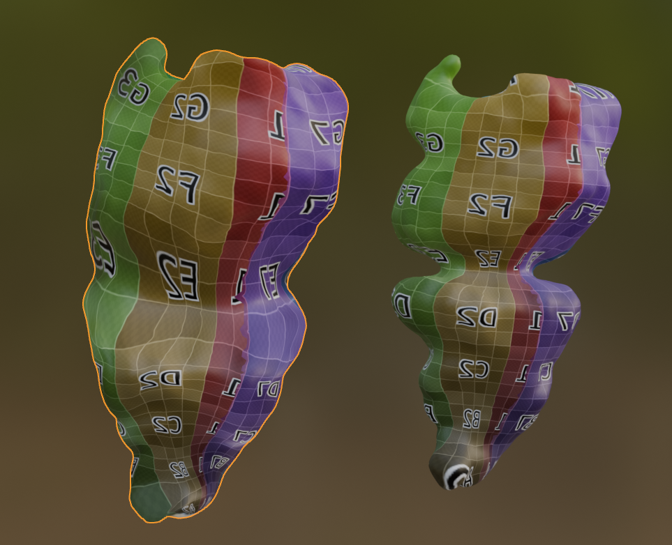
We can also overlay it with the mesh from timepoint 1 to see that they match perfectly.
Cartographic projections
Finally, let’s use the results to make some cartographic projections
normal_offsets = [0,] #np.linspace(-5, 5, 11) # in microns
metadata_dict["normal_offsets"] = normal_offsets # add the info to the metadata
uv_grid_steps = 1024projected_data_tpt_20, projected_coordinates_tpt_20, projected_normals_tpt_20 = tcinterp.create_cartographic_projections(
image="midgut_example/downsampled_3x/Time_000020_c1_stab-3x.tif",
mesh="midgut_example/wrapped_moebius_20.obj",
resolution=metadata_dict["resolution_in_microns"],
normal_offsets=normal_offsets,
uv_grid_steps=uv_grid_steps)plt.imshow(projected_data_tpt_20[0][0])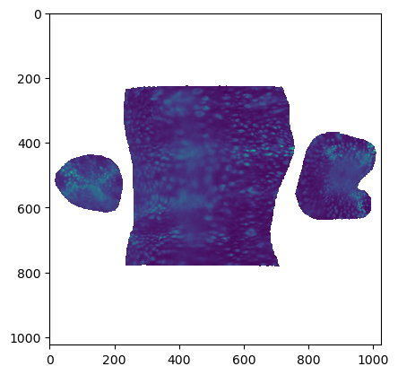
projected_data_tpt_1, projected_coordinates_tpt_1, projected_normals_tpt_1 = tcinterp.create_cartographic_projections(
image="midgut_example/downsampled_3x/Time_000001_c1_stab-3x.tif",
mesh=mesh_initial_UV,
resolution=metadata_dict["resolution_in_microns"],
normal_offsets=normal_offsets,
uv_grid_steps=uv_grid_steps)plt.imshow(projected_data_tpt_1[0][0])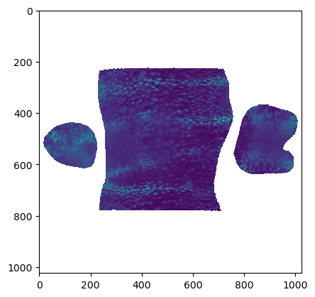